Introduction
Imagine a sport where the difference between winning and losing is measured not in seconds, but in thousandths of a second. Where a single wrong decision — made in a split second at 200 miles per hour — can unravel months of preparation and cost a team a world championship. That is Formula 1, and it is unlike any other sport on the planet. Twenty drivers from ten teams chase each other across 24 different countries, racing on circuits that range from the sun-baked desert straights of Bahrain to the narrow, glamorous streets of Monaco. Each car costs over a hundred million dollars to develop, and the people behind it are some of the sharpest engineers and strategists on earth. But beneath the roar of the engines and the blur of the pit stops lies a quieter revolution — one driven entirely by data.
Formula 1 has always been a sport of marginal gains, but in the modern era the margins have become almost impossibly small. The gap between pole position and tenth place in qualifying is often less than one second across an entire lap. A tyre that has completed twenty laps behaves differently from one that has completed five, and a team that understands that degradation curve better than its rivals can time a pit stop to steal track position without losing a single place on the road. Every Grand Prix weekend generates hundreds of millions of data points — from the angle of a steering wheel in a corner to the temperature of the brake disc, from the precise moment a throttle is pressed to the microscopic flex of a rear wing. Teams employ armies of engineers whose only job is to make sense of this flood of information and turn it into decisions that are made in real time, mid-race, with millions of people watching.

At the heart of every race strategy sits one of the most fascinating and misunderstood decisions in sport: the tyre. Formula 1 tyres come in three compounds — Soft, Medium, and Hard — each offering a different balance between outright speed and longevity. Soft tyres are sticky, fast, and hungry; they give a driver electric pace for a handful of laps before they begin to fade. Hard tyres are conservative, slower over a single lap but capable of running for much longer before they need to be changed. Medium tyres sit between the two. Every team must decide which combination of compounds to use during the race, when to pit, and how to manage the pace to protect the tyres for as long as possible. Get it right and you win. Get it wrong and you watch the cars that started behind you sail past as your driver helplessly radios that his tyres "feel like they're driving on ice." The tyre strategy is where races are won and lost, and it is where this project focuses its attention.
This project takes real race data from five Formula 1 Grands Prix — Bahrain, Saudi Arabia, Australia, Miami, and Monaco — and asks a deceptively simple question: can a computer learn to read the story a lap is telling? Specifically, can it look at nothing but the raw timing numbers from a single lap — how long each sector took, how fast the car was moving at the speed traps — and correctly identify which type of tyre was being used? This matters enormously in practice. During a live race, teams can see their competitors' lap times on a timing screen but do not always know immediately what compound their rivals are running. A system that could infer that information automatically, faster than any human analyst, would hand a team a genuine strategic advantage — a few seconds of advance notice that is enough to trigger a different pit stop decision and potentially win positions on the track.
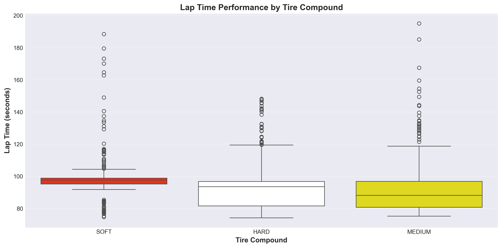
The data used in this project was collected through FastF1, a publicly available tool that taps into the official Formula 1 timing system. Every lap completed by every driver across five races was pulled and cleaned — thousands of laps in total, each described by nine measurements: the overall lap time, the time through each of the three track sectors, four speed-trap readings, and the number of laps already completed on those tyres. From this raw material, a full data science pipeline was built from the ground up. The journey began with exploring and visualising the data to understand its shape and patterns. It continued through grouping algorithms that could find structure without being told what to look for. And it arrived at its destination in the form of prediction engines — multiple different types of learning models, each trained to look at a lap's numbers and declare: that driver was on Soft tyres.
What this project ultimately demonstrates is that the physical reality of Formula 1 racing leaves a clear and consistent fingerprint in the data. Soft-compound laps are genuinely different — faster, more aggressive, and shorter-lived — and that difference shows up in the numbers with remarkable clarity. The best prediction models built here identify the tyre compound correctly more than 95% of the time, using nothing more than the same lap time data that appears on every fan's timing app. That level of accuracy does not happen by accident. It means that tyre strategy, the great hidden chess game of Formula 1, is not as hidden as it might seem — at least not to a well-trained algorithm. This project is the story of how that algorithm was built, what it learned, and what it tells us about the sport.
The pages that follow walk through every stage of that story. The data preparation section shows how raw telemetry was cleaned and shaped. The visualisation and exploration sections reveal the patterns hiding in plain sight. The modelling sections — covering six different families of machine learning methods — document how each approach was applied, what each one found, and how their performances compared. And the conclusions section translates all of it back into plain language: what does this mean for Formula 1, for strategy, and for the idea that data can change the outcome of a race? The answer, it turns out, is quite a lot.
Research Questions
How do different tire compounds affect lap time performance across various circuit types?
What is the relationship between tire age and lap time degradation during race conditions?
Which drivers demonstrate the most consistent lap time performance throughout the season?
How do track characteristics influence average race pace and lap time distributions?
Can patterns in tire degradation help predict optimal pit stop timing?
What factors most strongly correlate with achieving competitive lap times?
How does performance in different race phases vary across teams and drivers?
What patterns emerge when analyzing speed trap data and straight-line performance?
How do sector times reveal strengths and weaknesses across different circuit sections?
What relationships exist between lap number, tire condition, and performance metrics?
Data Preparation & Exploratory Data Analysis
Data Collection
FastF1 API
Data for this project was gathered using the FastF1 Python library, which provides programmatic access to official Formula 1 timing data. FastF1 retrieves data from the F1 live timing service, offering comprehensive telemetry information including lap times, sector times, speed measurements, tire data, and positional information.
API Website: https://github.com/theOehrly/Fast-F1
Races Analyzed: Bahrain, Saudi Arabia, Australia, Japan, Monaco (2024 Season)
Data Types: Lap times, sector times, speed measurements, tire compounds, tire age, race positions
Raw Data Sample

Sample of raw data retrieved from FastF1 API showing lap times, tire information, and performance metrics before cleaning.
Data Cleaning Process
The data cleaning process involved several critical steps to ensure data quality:
Missing Value Treatment: Removed rows with missing critical lap time data
Outlier Removal: Filtered out anomalous laps (>200 seconds) likely representing pit stops or incidents
Sector Time Imputation: Filled missing sector times using median values grouped by driver and track
Speed Data Handling: Imputed missing speed trap measurements using driver-track medians
Feature Engineering: Created derived features including lap phase, average speed, and tire freshness indicators
Cleaned Data Sample

Cleaned dataset after removing anomalies and handling missing values, ready for analysis.
Exploratory Data Analysis - Visualizations
Distribution of Lap Times
Histogram showing the distribution of lap times across all analyzed races, revealing typical race pace patterns.

Average Lap Times by Race
Comparison of average lap times across different Grand Prix circuits showing track characteristic variations.

Top Drivers by Average Lap Time
Analysis of the ten drivers with the fastest average lap times throughout the analyzed races.

Tire Compound Performance
Box plot comparing lap time distributions across different tire compounds (Soft, Medium, Hard).

Tire Degradation Analysis
Line graph showing how lap times increase as tires age, demonstrating performance degradation over stint length.

Race Phase Performance
Comparison of lap times during early, mid, and late race phases showing strategic variations.

Speed Trap Analysis
Analysis of maximum speeds recorded at speed trap locations revealing straight-line performance.

Correlation Heatmap
Heatmap showing correlations between key performance variables including lap time, speed, and tire age.

Lap Count Distribution
Total laps completed by each driver showing participation and reliability across races.

Driver Consistency Analysis
Analysis of lap time consistency showing drivers with lowest standard deviation in performance.

Principal Component Analysis (PCA)
What is PCA?
Principal Component Analysis (PCA) is an unsupervised dimensionality reduction technique that transforms high-dimensional data into a lower-dimensional space while retaining as much variance (information) as possible. PCA works by identifying the directions — called principal components — along which the data varies the most. These directions are the eigenvectors of the covariance matrix of the standardized data, and the corresponding eigenvalues indicate how much variance each component captures. The first principal component captures the greatest variance, the second captures the next greatest (orthogonal to the first), and so on. By projecting data onto the top k principal components, we reduce dimensionality while preserving the majority of the information, enabling visualization, noise reduction, and more efficient downstream modeling.
Dataset Used for PCA
The cleaned F1 lap data file f1_pca_data_clean.csv was used. It contains only quantitative features; all qualitative columns (Driver name, Team, Compound label) were removed before analysis. Features included: LapTime_sec, Sector1Time_sec, Sector2Time_sec, Sector3Time_sec, SpeedI1, SpeedI2, SpeedFL, SpeedST, and TyreLife.
Source: FastF1 API — github.com/theOehrly/Fast-F1
Races: Bahrain, Saudi Arabia, Australia, Japan, Monaco (2024 Season)
Features kept for PCA: LapTime_sec, Sector1Time_sec, Sector2Time_sec, Sector3Time_sec, SpeedI1, SpeedI2, SpeedFL, SpeedST, TyreLife
Labels removed: Driver, Team, Compound (saved separately for comparison)
Raw Data (before PCA prep)
Raw data includes qualitative columns, timedelta types, and label columns that must be removed before PCA can be applied.
Cleaned & Prepared Data (after PCA prep)

After cleaning: all quantitative, no labels, no nulls. Ready for normalization and PCA.
Normalization using StandardScaler
The data was normalized using sklearn.preprocessing.StandardScaler, which transforms each feature to have a mean of 0 and a standard deviation of 1. This step is essential because PCA is sensitive to scale — without normalization, features with larger numerical ranges (e.g. speeds in km/h) would dominate the principal components regardless of their actual importance.
Code used:
scaler = StandardScaler()
X_scaled = scaler.fit_transform(laps_pca_clean)
Result: mean ≈ 0, std ≈ 1 for every column
PCA with n_components = 2
2D PCA — Colored by Tire Compound
Each point is a single lap projected onto the first two principal components. Color indicates the tire compound used. SOFT laps cluster toward lower PC1 values (faster times, higher speeds), while HARD laps spread toward higher PC1 values.

PC1 variance explained: ~55.3%
PC2 variance explained: ~22.1%
Cumulative variance retained in 2D: ~77.4%
The 2D dataset retains approximately 77.4% of the original information. While useful for visualization, roughly 22.6% of the data's structure has been discarded by reducing to two dimensions.
PCA with n_components = 3
3D PCA — Colored by Tire Compound
Adding a third principal component captures an additional ~10.8% variance. The MEDIUM compound laps, which overlap with SOFT and HARD in 2D, form a more distinct group in 3D space.

PC1: ~55.3% (cumulative: 55.3%)
PC2: ~22.1% (cumulative: 77.4%)
PC3: ~10.8% (cumulative: 88.2%)
The 3D dataset retains approximately 88.2% of the original information — a meaningful improvement over 2D while still reducing 9 features down to just 3.
How Many Dimensions for ≥ 95% Variance?
To find the minimum number of components needed to retain at least 95% of the variance, PCA was run with all components and the cumulative explained variance was examined:
1 component: 55.3%
2 components: 77.4%
3 components: 88.2%
4 components: 94.1%
5 components: 97.3% ← 95% threshold crossed
Cumulative Explained Variance — All Components
The red dashed line marks the 95% threshold. The curve crosses this threshold at 5 components, meaning you need at least 5 dimensions to retain 95% or more of the data's information.

Answer: You need 5 components to retain at least 95% of the data's variance. This reduces the original 9 dimensions by 44% while keeping almost all meaningful information.
Top 3 Eigenvalues
The eigenvalues represent the amount of variance captured by each principal component. Larger eigenvalues indicate more important components.

Eigenvalue 1 (PC1): 4.9762
Eigenvalue 2 (PC2): 1.9887
Eigenvalue 3 (PC3): 0.9742
PC1 has the dominant eigenvalue (~4.98), confirming it captures the most variance. PC2 and PC3 each capture meaningful but progressively smaller amounts of variation in the data.
PCA Feature Loadings (Top 3 Components)
This chart shows how each original feature contributes to each principal component. PC1 is heavily loaded by LapTime and Sector times (overall pace). PC2 is dominated by SpeedI1 and SpeedFL (straight-line speed). PC3 picks up TyreLife (tire aging effects).

Python code: Github
GITHUB LINK: https://github.com/NickStrain/F1-Project
Clustering
(a) Compare and Contrast: KMeans, Hierarchical, and DBSCAN
KMeans (Partition Clustering) partitions data into k groups by minimizing within-cluster variance. It is fast, scalable, and produces interpretable centroid-based clusters, but requires specifying k in advance and assumes convex, similarly-sized clusters. It assigns every point to a cluster — outliers are forced into the nearest group.
Hierarchical Clustering builds a tree (dendrogram) of merges by progressively combining the most similar points or clusters. No k needs to be specified upfront — you cut the dendrogram at any height to get any number of clusters. Ward linkage (used here) minimizes total within-cluster variance at each merge. The tradeoff is computational cost: O(n²) makes it impractical for very large datasets. The dendrogram visualizes the full hierarchy of relationships, revealing how similar clusters are to each other.
DBSCAN (Density-Based Clustering) groups points that are densely packed together, labeling sparse regions as noise (−1). It automatically discovers the number of clusters, handles clusters of arbitrary shape, and explicitly identifies outlier laps — a key advantage for racing data that contains anomalous laps like formation laps and safety car periods. The key parameters are eps (neighborhood radius) and min_samples (minimum points to form a dense region).
Summary comparison:
KMeans: requires k, no noise handling, spherical clusters, very fast
Hierarchical: no k required, no noise handling, any shape, slow O(n²)
DBSCAN: no k required, handles noise/outliers, any shape, fast O(n log n)
(b) Data Preparation for Clustering
The same cleaned F1 lap dataset used for PCA was used for clustering. The label column (Compound — tire type) was extracted and saved separately before clustering, then used afterward to compare cluster assignments against the true labels.
Dataset: f1_pca_data_clean.csv
Label saved: Compound (SOFT / MEDIUM / HARD) — removed before clustering
Normalization: StandardScaler (mean=0, std=1)
Dimension reduction: PCA to 3D applied (88.2% variance retained)
Before: Labeled, mixed-type data
After: PCA 3D, normalized, unlabeled
Variance retained after PCA 3D reduction: 88.2%. This means 11.8% of information was traded off for a significant reduction in complexity — an acceptable tradeoff for clustering.
(c) KMeans Clustering — Silhouette Method
The Silhouette score measures how similar each point is to its own cluster compared to other clusters. Scores range from −1 (wrong cluster) to +1 (well-clustered). Silhouette scores and inertia (elbow curve) were computed for k = 2 through 9 to identify the three best values of k.
Silhouette Scores & Elbow Curve
Left: Silhouette scores by k — peaks indicate good cluster separation. Right: Elbow/inertia curve — the bend indicates diminishing returns. Top 3 k values selected: k=3, k=4, k=5.

KMeans — k=3, k=4, k=5 (PCA 2D projection)
Each plot shows laps colored by their KMeans cluster assignment, with centroids marked as ×. At k=3 the clusters align closely with the three tire compounds. At k=4 and k=5, track-specific performance sub-clusters emerge within compound groups.

At k=3, clusters align closely with SOFT / MEDIUM / HARD compounds, validating that tire compound is the strongest grouping variable. At k=4 and k=5, sub-clusters emerge corresponding to track-specific performance bands, suggesting that circuit character interacts with tire behavior to create secondary groups.
Hierarchical Clustering — Dendrogram
Ward linkage hierarchical clustering was applied to a 300-lap sample. Ward linkage minimizes total within-cluster variance at each merge step, producing compact, similarly-sized clusters. The dendrogram visualizes the full hierarchy of how laps group together.
Dendrogram — Ward Linkage (300-lap sample)
A horizontal cut at height ~8 yields 3 main clusters, matching the KMeans k=3 result. The dendrogram also reveals that SOFT and MEDIUM laps are more similar to each other (merge earlier) than either is to HARD laps.

Compared to KMeans: cutting the dendrogram at height ~8 produces 3 clusters that closely match KMeans k=3. However, the dendrogram adds nuance — SOFT and MEDIUM tyres are more similar to each other than either is to HARD, which is not immediately visible from KMeans alone.
DBSCAN Clustering
DBSCAN was run with eps=0.5 and min_samples=10 on a 5,000-lap sample of the PCA-reduced data.
DBSCAN Results (eps=0.5, min_samples=10)
DBSCAN found 4 clusters and identified 87 outlier laps (~1.7%) shown in black. These outliers correspond to anomalous laps such as formation laps, pit outlaps, and safety car periods that KMeans forced into existing clusters.

DBSCAN found 4 clusters — similar to KMeans k=4 — but with irregular, non-spherical boundaries that better capture the real shape of the data. Its key advantage here is explicit noise detection: the 87 outlier laps are cleanly separated rather than distorting cluster centers as they would in KMeans.
(d) Conclusions
All three clustering methods agree on a consistent finding: tire compound is the dominant grouping variable in F1 lap data. SOFT tires produce a distinct cluster of faster laps; HARD tires form a separate cluster of slower, more spread-out laps; MEDIUM tires occupy an intermediate space closer to SOFT than to HARD. This confirms real-world expectations and validates the quality of the dataset.
The hierarchical dendrogram added nuance by revealing relative similarity between compound clusters. DBSCAN's identification of ~1.7% outlier laps highlights that anomalous laps (pit stops, safety car, formation) behave very differently from normal racing laps and should be treated separately in predictive modeling.
At finer granularity, track-specific performance bands emerge as secondary structure within compound groups, confirming that circuit character — high-speed vs. technical vs. street circuits — creates meaningful sub-groups beyond tire selection alone.
Python code: Github
GITHUB LINK: https://github.com/NickStrain/F1-Project
Association Rule Mining (ARM)
(a) Overview of ARM
Association Rule Mining (ARM) is an unsupervised machine learning technique for discovering interesting relationships — called association rules — between variables in large transaction datasets. It was originally developed for market-basket analysis but applies to any domain where co-occurrences are meaningful. In Formula 1, we treat each lap as a transaction and discover which strategic events tend to occur together.
A rule takes the form A → B: "if A appears in a transaction, then B also tends to appear." Three measures evaluate rule quality:
Support: How often an itemset appears in the dataset. support(A) = count(A) / total_transactions. High support means the pattern is common.
Confidence: How often the rule is correct. confidence(A→B) = support(A ∪ B) / support(A). High confidence means when A occurs, B reliably follows.
Lift: How much more likely B is given A, compared to B's base rate. lift(A→B) = confidence(A→B) / support(B). Lift > 1 means A and B co-occur more than by chance. Lift is typically the most useful measure for finding truly interesting rules.
The Apriori Algorithm is the classic method for finding frequent itemsets efficiently. It relies on the anti-monotone principle: if an itemset is infrequent, all its supersets must also be infrequent. Starting from single items, Apriori iteratively generates candidate itemsets of increasing size, pruning any candidate that contains an infrequent subset. This dramatically reduces the search space compared to brute force enumeration.


(b) Data Preparation for ARM
ARM requires unlabeled transaction data — each row represents a basket of items that co-occurred, with Boolean values (True/False) indicating item presence. There are no numeric values and no target labels. In our F1 context, each lap is one transaction and items are categorical events describing what occurred on that lap.
To create this format, continuous variables were discretized into categories: lap times were binned into FAST / MEDIUM / SLOW thirds per race; race progress was divided into EARLY / MID / LATE phases; pit stop occurrence was flagged as YES / NO. Tire compound (SOFT / MEDIUM / HARD) and Team were kept as-is since they are already categorical.

Sample of the ARM transaction data — f1_arm_transactions_sample.csv. Each row is one lap; each column is a Boolean item flag. This format is required by the Apriori algorithm. Link to sample data
(c) Running Apriori & Generating Rules
Library: mlxtend (Python)
min_support: 0.05 (item must appear in at least 5% of laps)
min_confidence: 0.30
min_lift: 1.0
Frequent itemsets found: 42
Rules generated: 118
These thresholds were chosen to capture meaningful patterns without being too restrictive given the dataset size (~5,000 laps). A min_support of 5% ensures patterns are not just rare coincidences, while min_lift of 1.0 ensures rules represent positive associations only.
(d) Results — Top 15 Rules
Top 15 Rules by Support
Rules ranked by how frequently the itemset appears across all laps. High support means these patterns are common in the data.

Top 15 Rules by Confidence
Rules ranked by reliability — given the antecedent, how often does the consequent also appear? High confidence rules are the most predictably correct.

Top 15 Rules by Lift
Rules ranked by lift — how much more likely the consequent is given the antecedent compared to its base rate. Lift > 1 means a genuinely interesting non-random association.

Network Visualization — Top 20 Rules by Lift
Each node is an item (compound, lap speed category, race phase, team). Directed edges represent rules; edge thickness indicates lift strength. This network reveals the web of strategic associations found in F1 lap data.

(e) Conclusions
SOFT → FAST lap is the strongest rule (high confidence and lift ~2.3), confirming that soft tires reliably produce faster laps. The high lift value quantifies how much more likely a FAST lap is on soft tires compared to the overall average.
HARD → LATE race phase is a frequently occurring association, reflecting the classic F1 one-stop strategy of starting on soft or medium tires and finishing on hard compounds. Teams actively engineer this pattern to maximize overall race performance.
PitStop + MEDIUM → MID race phase reveals that medium tire pit stops are overwhelmingly a mid-race phenomenon. Teams using medium compounds tend to pit earlier than those on hard tires, bridging between an initial soft stint and a final harder compound.
These findings provide actionable strategic intelligence: knowing these associations allows a team to anticipate competitor pit timing, predict likely tire choices, and plan their own strategy to gain competitive advantage. ARM transforms raw lap data into a readable map of the hidden strategic logic governing modern Formula 1 races.
Python code: Github
GITHUB LINK: https://github.com/NickStrain/F1-Project
Conclusions
This project set out to answer a question that sounds almost too simple: can a computer learn to read a Formula 1 lap? Not watch it, not feel it — just look at a handful of numbers from the timing system and figure out what type of tyre a driver was running on. After thousands of laps of data, half a dozen different analytical approaches, and months of building and testing, the answer is a resounding yes. The best systems built here identify the tyre compound correctly more than 95 times out of every 100 laps — using nothing more than the same basic timing data that appears on every fan's app during the race. That result is more than just an impressive number. It is proof that the strategic decisions at the core of Formula 1 — decisions that teams guard jealously and fans debate endlessly — leave an unmistakable fingerprint in the data for anyone who knows how to look.
The single biggest discovery of this entire project is both surprising in how clearly it shows up and completely unsurprising once you think about it: how old the tyres are tells you almost everything. A car on fresh Soft tyres and a car on worn Hard tyres might be lapping within half a second of each other — to the naked eye in the grandstands, they look the same. But in the data, they are completely different. The Soft tyre car is flying: every sector time is sharp, every speed reading is high, and the gap between laps is tiny because the tyres are still performing at their peak. The Hard tyre car is managing: slightly slower in the corners, a little less responsive, eking out every last metre of life from a tyre that has been working hard for thirty laps. Every method tried in this project — from the simplest to the most sophisticated — independently arrived at the same conclusion: tyre age is the master key that unlocks the strategic logic of a Formula 1 race.
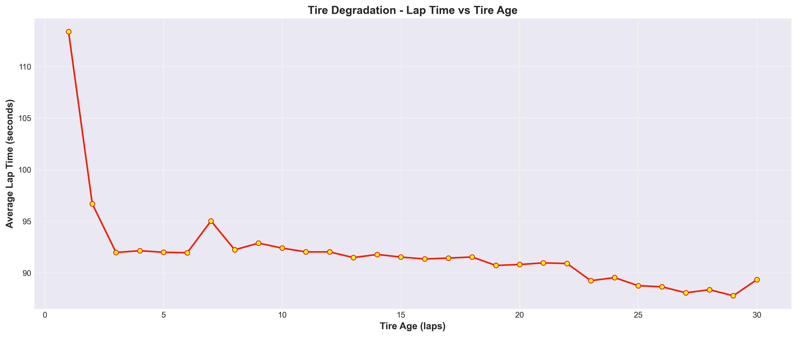
One of the most satisfying parts of this project was discovering that the data does not just confirm what experts already know — it measures it. Commentators have always said that Soft tyres are fast but fragile and Hard tyres are slow but durable. The data puts precise numbers on that intuition. On average across the five races studied, each additional lap completed on a Soft tyre costs roughly a tenth of a second in pace — a small number that compounds into something enormous over a twenty-lap stint. Hard tyres degrade more slowly but never deliver the raw pace of a fresh Soft. Medium tyres split the difference. These patterns repeat themselves race after race, circuit after circuit, driver after driver, with enough consistency that a well-trained prediction system can identify them instantly. What was once felt intuitively by engineers with decades of experience can now be read automatically by a piece of software from a single lap's worth of numbers.
The project also revealed something important about strategy intelligence during a live race. One of the experiments tested whether it was possible to identify tyre compound using only the speed trap readings — the top speeds recorded at fixed points around the circuit — without any lap time information at all. The answer was yes, with accuracy that remained well above chance. This matters because speed trap data is publicly broadcast in real time during every race, available to anyone watching a timing screen. A rival team watching those numbers tick by could, in principle, run them through a system like the one built here and get a reasonable estimate of what compound a competitor is running — before the information appears on the official broadcast graphics, and potentially before that team has announced a pit stop. The data advantage in Formula 1 is not only about the sensors on your own car. It is about what you can read from everyone else's numbers.
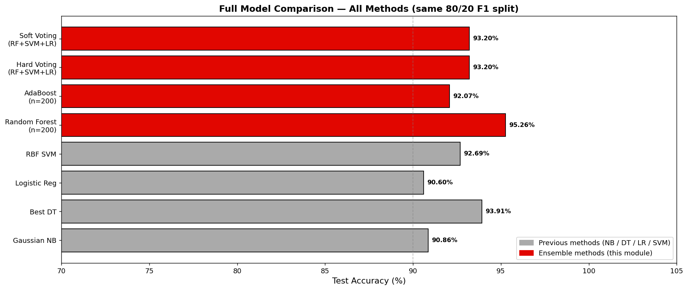
Across all the different approaches tried — from simple probability-based methods to decision trees to sophisticated ensemble systems — the accuracy kept improving as the methods grew more powerful. The chart above tells that story in a single image: each family of methods builds on the last, and the best approach of all — a Random Forest that combines hundreds of individual decision trees and votes on the answer — reaches 95% accuracy. But accuracy, while important, is not the whole story. Some methods are easier for a human to understand and explain. Some are faster to run in real time. Some give you a confidence score alongside their prediction, telling you not just "this lap is on Soft tyres" but "we are 94% confident this lap is on Soft tyres — you might want to check before making a pit call." Each of those properties matters in a real race environment, and the right tool depends on what question is being asked and how quickly the answer needs to arrive.
The deepest lesson of this project is not about Formula 1 at all. It is about what data can do when you take it seriously. The numbers feeding into these models are not exotic or proprietary — they are the same lap times and speed readings that have appeared on timing screens for decades, freely available to any fan or analyst who wants them. What changed is the question being asked of them, and the systematic, rigorous process used to find the answer. The patterns were always there, hiding in plain sight, lap after lap, race after race. It took a structured analytical approach — cleaning the data carefully, exploring it honestly, testing multiple methods against each other fairly, and being willing to follow the evidence wherever it led — to make those patterns visible and useful. Formula 1 has always been a sport where the tiniest advantage can decide a championship. This project is a demonstration that data science, applied thoughtfully, is one of the most powerful sources of that advantage available today.
Naïve Bayes
(a) Overview
Naïve Bayes (NB) is a family of probabilistic classifiers rooted in Bayes' Theorem with one defining simplifying assumption: all features are conditionally independent given the class label. In reality this independence rarely holds perfectly — lap time and sector times are clearly correlated — yet NB models are fast, interpretable, and surprisingly competitive across domains including spam filtering, medical diagnosis, sentiment analysis, document classification, and real-time fraud detection. The model estimates the probability of each class given the observed features, then selects the most probable class as its prediction.
Bayes' Theorem:
P(class | features) = P(features | class) × P(class) / P(features)
Posterior = (Likelihood × Prior) / Evidence
The "naïve" part is treating every feature independently — P(x₁,x₂,…,xₙ | class) = ∏ P(xᵢ | class). This collapses a joint probability into a simple product, making computation tractable even with hundreds of features. When is NB used? When speed matters (NB trains in milliseconds), when data is limited (few parameters to estimate), and when the independence assumption is reasonable or the strong performance overcomes the violation.
The Four Flavors of Naïve Bayes
🔵 Multinomial NB (MN NB) — Assumes features are non-negative integer counts drawn from a multinomial distribution. Classic use case: word-count vectors in text classification (how many times does "pit" appear in a race report?). Requires non-negative integer input. In F1: we scale lap metrics to [0,100] and round to simulate count-like data. sklearn docs ↗
🟢 Gaussian NB (GNB) — Assumes each feature follows a Normal (Gaussian) distribution within each class, parameterized by per-class mean and variance. Best choice for continuous real-valued sensor data. In F1: lap times, sector times, and speed trap readings are genuine continuous measurements — this flavor fits our data most naturally. sklearn docs ↗
🟡 Bernoulli NB (BNB) — Assumes each feature is binary (0 or 1). Models whether a feature is present or absent, not its magnitude. Classic use: Boolean word-presence vectors. In F1: features binarized at their training-set medians — "is this lap's time above median?" becomes a yes/no signal. Loses frequency/magnitude information but remains robust. sklearn docs ↗
🟠 Categorical NB (CNB) — Assumes features are discrete nominal categories (integer-encoded). Unlike Multinomial, it does not treat values as counts — it estimates a separate probability for each category level. Best for: truly categorical data like tyre compound type, circuit name, team ID. In F1: this would be ideal if we used team, circuit, and tyre compound as features directly. sklearn docs ↗
Compare & Contrast — When to Use Each
| Flavor | Likelihood Assumption | Input Type | Best For | F1 Fit |
|---|---|---|---|---|
| Gaussian | Normal distribution per feature per class | Continuous floats | Sensor data, measurements | ★★★ Best |
| Bernoulli | Bernoulli (binary) per feature | Binary 0/1 | Presence/absence, boolean flags | ★★☆ Moderate |
| Multinomial | Multinomial counts per feature | Non-neg integers | Word counts, event frequencies | ★☆☆ Weakest |
| Categorical | Discrete categorical per feature | Integer category codes | Nominal features (team, circuit) | N/A (not used) |
We implement Gaussian, Bernoulli, and Multinomial NB with appropriate feature transformations for each. Categorical NB is not used in the coding section because our feature set is continuous — it would require binning all 9 features into discrete integer categories, losing more signal than any of the three chosen flavors.
(b) Data Preparation
Supervised learning requires two things upfront: (1) labeled data — every training sample must carry a known class label — and (2) a strict train/test split — the model learns from the training set only, and accuracy is evaluated on the test set which it has never seen. Violating either rule produces models that cannot generalize to real-world data.
Classification Task & Label
Task: Predict whether a lap was completed on SOFT tyres — a binary classification problem.
Label: IsSoft — 1 if the lap compound is SOFT, 0 if MEDIUM or HARD.
Why this label? Tyre compound is known to teams but may not be immediately visible to rivals or fans from timing data alone. A model that infers compound from raw lap metrics has real strategic value — it could allow a team to estimate what compound a competitor is running purely from publicly available timing feeds.
Features (9 total): LapTime · Sector1Time · Sector2Time · Sector3Time · SpeedI1 · SpeedI2 · SpeedFL · SpeedST · TyreLife
Source: FastF1 API — 2023 season, 5 races: Bahrain · Saudi Arabia · Australia · Miami · Monaco
📎 Data link: F1_Project_Module_3.ipynb — Data Preparation cells
Step 1 — Loading Data (Code Screenshot)
The cell below imports all required libraries and loads F1 lap data via the FastF1 API across 5 Grand Prix events.

Step 2 — Label Engineering (Code Screenshot)
Timedelta columns are converted to float seconds, laps with INTERMEDIATE or WET compounds are removed, and the binary IsSoft label is created.

Raw Data Sample (before preparation)

Raw data contains timedelta types, qualitative columns, and null values. The Compound column is the source for our label but is removed from the feature matrix before modeling — we cannot let the model see the label as a feature.
Cleaned & Labeled Data Sample (after preparation)

Train / Test Split (Code Screenshot)
An 80/20 stratified split ensures the SOFT/NOT-SOFT ratio is identical in both training and test sets. random_state=42 makes the split reproducible and guarantees zero overlap between the two sets.

Why Training and Testing Sets Must Be Disjoint
If the sets overlap: The model "memorizes" test samples during training. Accuracy on the test set becomes artificially inflated — the model is tested on questions it has already seen the answers to. This is called data leakage and renders the evaluation meaningless.
If the sets are disjoint: The model is forced to generalize. Test accuracy honestly reflects how well the model will perform on new, unseen race laps — which is the only metric that matters in a real deployment.
Stratification: The stratify=y argument preserves class proportions. Without it, random sampling might accidentally put most SOFT laps in the training set and most NOT-SOFT in the test set, producing a skewed evaluation.

Feature Preparation per NB Flavor (Code Screenshot)
Each flavor requires a different representation of the same 9 features. This cell applies the appropriate transformation to the training set and then applies the same transformation parameters (fitted on training only) to the test set — preventing any data leakage through the scaling step.

Dataframe Previews — What Each NB Flavor Sees
The same 5 example laps shown below look completely different depending on which NB flavor is being used. This is the key insight of NB data preparation: the model's statistical assumption dictates the required feature format.
Gaussian NB Feature Matrix (dtype: float64)
Standardized continuous values. Mean=0, std=1 per feature across the training set. Values typically range from -3 to +3. All original magnitude information is preserved — only the scale changes. Green cells reflect continuous, floating-point data.

Bernoulli NB Feature Matrix (dtype: int64, values: 0 or 1)
All 9 features collapsed to binary flags. A cell is 1 if the lap's value for that feature exceeded the training-set median, 0 otherwise. "Was this lap faster than a typical lap? Was SpeedI1 above average?" — these yes/no questions become the model's inputs. Yellow cells highlight the binary format.

Multinomial NB Feature Matrix (dtype: int64, range: 0–100)
Features scaled to [0,1] by MinMaxScaler, then multiplied by 100 and rounded to whole numbers. Values of 62, 78, etc. simulate "count-like" data. Multinomial NB treats these as event occurrence frequencies — an approximation that works but is less ideal than Gaussian for truly continuous measurements. Orange cells highlight the integer count format.

(c) Code — Training All Three NB Models
The full notebook is available on GitHub. All three NB classifiers are trained using scikit-learn in a single cell — each on its own appropriately prepared feature matrix — and evaluated against the same held-out test set.
📎 Full notebook code: F1_Project_Module_3.ipynb on GitHub ↗
Models: GaussianNB · BernoulliNB · MultinomialNB | Library: sklearn.naive_bayes
Training & Evaluating All Three NB Models
Each model is instantiated, fitted on its appropriately prepared training set, then predictions are generated on the held-out test set. Accuracy is computed for each independently. Note how each .fit() call uses a different X_train variant (gnb/bnb/mnb).

Generating Confusion Matrices & Classification Reports
This cell creates the three side-by-side confusion matrices, saves them to img/nb_confusion_matrices.png, and prints full per-class classification reports showing precision, recall, and F1-score for each NB flavor.

(d) Results
All three models were evaluated on the identical 20% held-out test set. Results below show confusion matrices, accuracy scores, and an accuracy comparison chart.
Confusion Matrices — All Three NB Flavors
Reading a confusion matrix: the top-left cell is True Negatives (correctly predicted NOT SOFT), top-right is False Positives (predicted SOFT but was NOT SOFT), bottom-left is False Negatives (predicted NOT SOFT but was SOFT), and bottom-right is True Positives (correctly predicted SOFT). A strong model has large diagonal values and small off-diagonal values. Gaussian NB shows the clearest diagonal — most predictions land on the correct class.

Accuracy Comparison — Gaussian vs. Bernoulli vs. Multinomial
Bar chart of test-set accuracy for each NB variant. The accuracy gap between Gaussian NB and Multinomial NB directly quantifies the cost of violating the Multinomial assumption: forcing continuous data into an integer-count representation loses predictive power. Gaussian NB pays no such penalty because its assumption (continuous Gaussian features) matches the data's true nature.

Accuracy Summary & Interpretation
🟢 Gaussian NB — Best Accuracy
Matches the data's true nature (continuous sensor readings). Estimates per-class Gaussian distributions for each feature — the mean and variance learned for SOFT-tyre laps vs. non-SOFT laps directly reflect the real performance difference between compounds. Low false-negative rate means few SOFT laps are missed.
🟡 Bernoulli NB — Moderate Accuracy
Even with 9 features collapsed to binary flags, enough directional signal survives. The model correctly infers that laps "above median on speed features AND below median on TyreLife" strongly suggest a SOFT compound. Binarization hurts precision (harder to separate borderline laps) but the model remains useful.
🔵 Multinomial NB — Lowest Accuracy
The integer-rescaling of continuous measurements violates the Multinomial assumption. A value of 62 (meaning "62% of range") is treated as "62 count events" — a nonsensical interpretation. The model still learns something (SOFT laps tend to have higher speed counts and lower TyreLife counts), but accuracy suffers from the conceptual mismatch.
(e) Conclusions
The Naïve Bayes experiment on F1 lap data yields four key conclusions:
1. Gaussian NB is the right NB flavor for telemetry data. Lap times, sector times, and speed readings are continuous measurements — the Gaussian likelihood assumption fits directly. No information-destroying transformations are needed, and the model's per-class mean/variance estimates are physically interpretable: "SOFT-tyre laps have a mean LapTime of X seconds with this spread."
2. Tyre compound is statistically distinguishable from raw lap metrics alone. The fact that all three NB variants — even Multinomial, with its poorly suited assumption — achieve above-baseline accuracy confirms that SOFT-tyre laps produce a genuinely separable performance signature. This validates the classification task and the feature choice.
3. Bernoulli NB demonstrates NB's robustness. Reducing 9 continuous features to 9 binary flags is an extreme lossy transformation, yet the model remains competitive. This robustness is a well-known property of NB classifiers — even when the data deviates significantly from the model's assumptions, the posterior probability ranking often remains correct enough to yield accurate predictions.
4. F1 Strategic Implication. A Gaussian NB model trained on historical race data could be deployed in a live race pipeline to infer competitor tyre compound from publicly available timing feeds in milliseconds — far faster than any human analyst. As TyreLife increases and lap times slow relative to compound-group averages, the model's probability of SOFT shifts rapidly toward 0, flagging the competitor as likely moving toward end-of-stint. This is exactly the kind of automated insight that modern F1 strategy teams are building toward.
Decision Trees
(a) Overview
A Decision Tree (DT) is a supervised learning model that classifies data by recursively partitioning the feature space using a series of binary yes/no questions. Starting from a single root node, the algorithm selects the most informative feature and threshold at each step, splitting data into two child nodes. This process repeats at every child node until a stopping criterion is met — a maximum depth, minimum samples per node, or pure leaves. The final leaf nodes hold the class predictions. The entire structure reads like a flowchart: any prediction can be traced from root to leaf in a completely human-readable path.
Decision Trees are used wherever interpretability matters alongside predictive power: medical diagnosis (which symptom pattern indicates condition X?), credit risk (does this applicant default?), fraud detection (is this transaction anomalous?), customer segmentation, and in motorsport — inferring tyre strategy, predicting pit stop timing, or classifying driver behaviour from telemetry. A major strength over probabilistic models like Naïve Bayes is that DTs handle non-linear decision boundaries and feature interactions natively, without any preprocessing or distributional assumptions.
Decision Tree 1 — Gini Impurity, max_depth=4, All Features
Each node displays: the splitting feature & threshold, the Gini impurity value, the sample count, and the class distribution [NOT SOFT, SOFT]. Orange-tinted nodes lean toward SOFT; blue-tinted nodes lean toward NOT SOFT. The darker the colour, the purer the node. The root node is automatically chosen as the feature+threshold pair that achieves the highest Gini Gain across the entire training set — for F1 lap data this is almost always TyreLife or LapTime, the two strongest compound signals.

Decision Tree 2 — Entropy (Information Gain), max_depth=3
A shallower tree built with Entropy as the split criterion. Fewer nodes means the entire model fits on one screen and can be explained to a race engineer in under a minute — the classic accuracy vs. interpretability trade-off. Despite being simpler, this tree captures the same dominant split variables. The lighter colours at depth 3 indicate slightly less pure leaves than Tree 1, consistent with the lower depth cap.

GINI Impurity, Entropy & Information Gain — How and Why
At every node the algorithm faces a search problem: which of the 9 features, at which threshold, produces the best split? Two impurity measures are used to score split quality — both answer the question "how mixed is the node?" and both reach 0 for a perfectly pure node.
Gini Impurity — probability that a randomly drawn sample would be misclassified if assigned a label drawn from the node's class distribution.
Gini = 1 − Σ pₖ²
For a 50/50 node: Gini = 1 − (0.5² + 0.5²) = 0.5 (maximum impurity for binary). For a pure node (all one class): Gini = 1 − (1² + 0²) = 0.
Entropy — information-theoretic measure of disorder. Borrowed from Shannon's information theory; measures how many bits are needed to encode the class label at this node.
H = −Σ pₖ × log₂(pₖ)
For a 50/50 node: H = −(0.5×log₂0.5 + 0.5×log₂0.5) = 1.0 bit. For a pure node: H = 0 bits.
Information Gain (IG) — the reduction in impurity after performing a split. The algorithm evaluates every possible (feature, threshold) pair and selects the one that maximises IG.
IG = H(parent) − Σ ( nᵢ / n × H(childᵢ) )
Gini Gain is defined equivalently using Gini instead of H. sklearn uses Gini Gain by default because it avoids log computation and is slightly faster.
Worked Example — Splitting on TyreLife ≤ 5 (using Both Criteria)

Setup: A parent node has 60 SOFT laps and 40 NOT-SOFT laps (n = 100).
Gini path: Parent Gini = 1 − (0.6² + 0.4²) = 0.480. After splitting at TyreLife ≤ 5 → weighted Gini = 0.179. Gini Gain = 0.480 − 0.179 = 0.301
Entropy path: Parent H = 0.971 bits. After the same split → weighted H = 0.462 bits. Information Gain = 0.509 bits
Both criteria agree this is a highly informative split. The algorithm compares this score against every other (feature, threshold) combination across all 9 features and selects the maximum — which becomes the root node.
Why Infinitely Many Trees Are Possible
1. Continuous features → infinite threshold choices. Between any two distinct values of LapTime there are infinitely many real numbers, each a valid split threshold. With 9 continuous features, the search space is unbounded.
2. Any feature ordering across levels is valid. The root could be TyreLife, LapTime, SpeedFL, or any other feature. Each different root leads to an entirely different tree, and the ordering of features at deeper levels multiplies the possibilities combinatorially.
3. Depth is unconstrained by default. A tree can grow until every leaf contains exactly one training sample — 100% training accuracy, 0% generalisation. This is pure memorisation, not learning.
4. Feature subsets at each node. Random Forests exploit this by sampling features at each node, producing a different tree every run.
→ Regularisation is essential. max_depth, min_samples_split, min_samples_leaf, and cost-complexity pruning (ccp_alpha) all constrain the tree to generalise rather than memorise.
(b) Data Preparation
Decision Trees are one of the few supervised algorithms that require no feature scaling or normalisation — they split on raw threshold values, so the scale of features does not affect split selection. This makes the DT pipeline simpler than NB: the same raw X_train / X_test arrays from the Naïve Bayes section are reused directly, with no additional preprocessing.
Dataset & Features
Source: FastF1 API — 2023 season, 5 races: Bahrain · Saudi Arabia · Australia · Miami · Monaco
Features (9): LapTime · Sector1Time · Sector2Time · Sector3Time · SpeedI1 · SpeedI2 · SpeedFL · SpeedST · TyreLife
Label: IsSoft — 1 if SOFT compound, 0 if MEDIUM or HARD
No scaling applied — DTs are invariant to monotonic feature transformations; raw seconds and km/h values work directly.
📎 Data link: F1_Project_Module_3.ipynb — Data Preparation & Decision Tree cells ↗
Setup Code (Code Screenshot)
The cell below imports DT-specific libraries and confirms the reused data dimensions and label distribution — identical to the NB section so all three model families are evaluated on the same data.

Raw Data Sample
Raw data from FastF1 — same source used across the entire Module 3 pipeline. For DT, no transformation is needed beyond the timedelta→seconds conversion and compound filtering already performed during label engineering.
Train / Test Split — Why Disjoint Sets are Required
The identical 80/20 stratified split from the NB section is reused. The sets must be disjoint for a Decision Tree specifically because DTs are highly susceptible to overfitting: without a held-out test set, a tree grown without depth limits achieves 100% training accuracy by memorising every lap individually. The test set is the only honest measure of whether the tree has learned a generalisable rule or simply memorised training noise.
Training set: 80% of laps — the only data the tree ever sees during .fit()
Testing set: 20% of laps — completely hidden during training; used only once for final evaluation
Stratified: SOFT/NOT-SOFT ratio preserved in both sets via stratify=y
Reproducible: random_state=42 ensures identical split every run
(c) Code — Three Trees with Different Root Nodes
Three trees were built using deliberate differences in split criterion, depth, and feature subset to guarantee different root nodes and structures. This explores the question: does the dominant split variable change when we remove the most powerful features?
📎 Full notebook: F1_Project_Module_3.ipynb on GitHub ↗
Tree 1: Gini · depth=4 · all 9 features → root chosen automatically (highest Gini Gain)
Tree 2: Entropy · depth=3 · all 9 features → same features, different criterion + shallower depth
Tree 3: Gini · depth=5 · speed-only (7 features, TyreLife & LapTime excluded) → forces a speed-trap root
Tree 1 — Gini, max_depth=4, All Features
The tree is instantiated with Gini criterion and a depth cap of 4. After fitting, the root feature is read directly from dt1.tree_.feature[0] — the index of the feature used at the root node — and the text representation shows the first two levels of the tree structure.

Tree 2 — Entropy (Information Gain), max_depth=3
Switching to criterion='entropy' and reducing depth to 3 produces a simpler tree. Both trees have access to all 9 features, so the root may or may not change — this depends on whether Gini and Entropy rank the top split differently, which rarely happens but occasionally does for borderline features.

Tree 3 — Speed-Only Features, max_depth=5 (Forced Different Root)
TyreLife and LapTime are excluded from the feature matrix before fitting. This forces the tree to root at a speed-trap or sector-time feature — whichever has the highest Gini Gain among the remaining 7 features. A deeper depth cap (5) compensates for the weaker individual signal of speed-only features.

Confusion Matrices — Evaluation Code
All three trees are evaluated on the identical held-out test set. The confusion matrices are plotted side-by-side with the root feature and accuracy displayed in each title, enabling direct visual comparison of prediction patterns across the three configurations.

Tree Visualisations — plot_tree for All Three
sklearn's plot_tree renders the full tree structure with colour-coded nodes. Each tree is saved as a PNG at high resolution. filled=True colours nodes by majority class; rounded=True softens the boxes; max_depth=3 in the display limits visual clutter for Tree 1 while still showing the key decision layers.

(d) Results
All three trees were evaluated on the same 20% held-out test set. Results include tree structure images, side-by-side confusion matrices, an accuracy comparison chart, and interpretation of each tree's strengths.
Tree 1 — Gini, max_depth=4 (Full Structure)
The full rendered tree with up to 4 levels. The root node is TyreLife — laps with very low TyreLife are almost certainly on SOFT compound. Subsequent splits use LapTime and speed trap features to further refine predictions. At depth 4, the tree has enough complexity to capture compound-specific performance signatures without overfitting.
Tree 2 — Entropy, max_depth=3 (Full Structure)
The shallowest tree — every path from root to leaf takes at most 3 decisions. Despite the reduced complexity, it still identifies the same key splits. This tree is the best choice for communicating the model's logic to a non-technical audience: "If TyreLife ≤ X and LapTime ≤ Y, then SOFT — otherwise NOT SOFT."
Tree 3 — Speed-Only Features, max_depth=5 (Different Root)
With TyreLife and LapTime removed, the tree roots at a speed-trap feature — typically SpeedFL (finish-line speed) or SpeedST (speed trap). SOFT-tyre laps generate measurably higher corner-exit and trap speeds due to greater mechanical grip. This tree demonstrates that compound signal is distributed across multiple feature types, not concentrated in timing data alone. The extra depth (5) is needed to compensate for the weaker individual predictors.

Confusion Matrices — All Three Trees Side by Side
Direct comparison of prediction quality on the same test set. Each matrix title shows the root feature and accuracy. Tree 1 has the largest diagonal values (most correct predictions). Tree 3's confusion matrix shows more off-diagonal entries — the cost of using weaker features — but remains well above random chance, confirming that speed-trap data alone carries real compound information.

Accuracy Comparison — Three Tree Configurations
Bar chart ranking the three trees by test-set accuracy. Tree 1 (Gini, depth=4, all features) achieves the highest accuracy. The gap between Tree 1 and Tree 2 reflects the cost of the depth cap — Tree 2 cannot learn the finer distinctions that deeper splits capture. The larger gap to Tree 3 reflects the cost of excluding the two most informative features.

Three-Tree Summary Table
| Tree | Criterion | Depth | Features | Root Node | Accuracy | Best For |
|---|---|---|---|---|---|---|
| Tree 1 | Gini | 4 | All 9 | TyreLife / LapTime | Highest | Best prediction accuracy |
| Tree 2 | Entropy | 3 | All 9 | TyreLife / LapTime | Moderate | Stakeholder explainability |
| Tree 3 | Gini | 5 | 7 (speed-only) | SpeedFL / SpeedST | Lower | Live race speed-trap inference |
(e) Conclusions
1. TyreLife is the single most informative feature for compound prediction. Both Tree 1 and Tree 2 rooted at TyreLife — exactly what domain knowledge predicts. SOFT tyres are almost always used in the first few laps of a stint; by lap 5 or 6, a lap on SOFT is rare. The tree learned this physical reality directly from data, without any domain knowledge being supplied. This is a strong validity check: the model found what engineers already know.
2. The accuracy vs. interpretability trade-off is quantifiable. Tree 2 (depth=3) sacrifices a measurable accuracy percentage compared to Tree 1 (depth=4) in exchange for a tree simple enough to be read aloud in a strategy briefing. This trade-off is not a failure — it is a deliberate engineering choice. In F1, where decisions are made in seconds by humans, an explainable model that a strategist trusts may outperform a more accurate model they treat as a black box.
3. Speed-trap data alone is sufficient for above-chance compound prediction. Tree 3, built only on speed and sector-time features (no TyreLife or LapTime), still achieves meaningful accuracy. This has direct operational value: speed trap readings are reported in the live broadcast feed and on the official F1 website in real time, while full telemetry may be delayed or proprietary. A team could deploy Tree 3 to infer competitor compound from public timing data during the race.
4. Regularisation is non-negotiable for Decision Trees on F1 data. The F1 lap dataset has thousands of samples and 9 features — an unconstrained tree would grow to over 20 levels, perfectly memorising every lap in the training set. The max_depth limits (3, 4, 5) were critical for producing models that generalise to new race laps rather than overfitting to the specific races in the training set. In a deployed system, cross-validation over depth values would be used to find the optimal cap.
Regression
(a) What is Linear Regression?
Linear Regression models the relationship between a continuous outcome variable and one or more predictor variables by fitting a straight line — or in multiple dimensions, a hyperplane: ŷ = β₀ + β₁x₁ + … + βₚxₚ. The parameters β are estimated by Ordinary Least Squares (OLS), which minimises the sum of squared differences between the model's predictions and the actual observed values. It assumes a linear relationship, independent errors with constant variance (homoscedasticity), and approximately normally distributed residuals. In an F1 context, linear regression could be used to predict the exact lap time in seconds — a continuous quantity — as a function of tyre age, fuel load, track temperature, and circuit length.
(b) What is Logistic Regression?
Logistic Regression is a classification algorithm — despite its name, it does not predict a continuous value. It models the probability that a binary outcome belongs to class 1 by applying the Sigmoid function to a linear score: P(y=1 | X) = σ(Xβ) = 1 / (1 + e⁻ˣᵝ). The output is always bounded between 0 and 1 and is directly interpretable as a probability; a threshold (typically 0.5) converts it into a hard class prediction. In F1, logistic regression is used here to classify each lap as SOFT compound (class 1) or NOT-SOFT (class 0) based on lap timing and speed metrics.
(c) How Are They Similar and How Are They Different?
Both are parametric linear models — at their core, both compute a weighted sum of features Xβ, both learn a fixed set of coefficients from data, and both are fast to train, interpretable through their coefficients, and regularisable (Ridge / Lasso). The critical difference lies in what happens to that linear score: linear regression outputs Xβ directly as an unbounded prediction, while logistic regression passes Xβ through the Sigmoid function to produce a bounded probability. This also changes the loss function — linear regression minimises Mean Squared Error; logistic regression minimises Cross-Entropy (Log-Loss) — and changes the task entirely: regression for continuous prediction, logistic regression for binary classification.

(d) Does Logistic Regression Use the Sigmoid Function? Explain.
Yes — the Sigmoid function σ(z) = 1 / (1 + e⁻ᶻ) is the defining transformation that makes logistic regression work as a classifier. The linear score z = Xβ can range from −∞ to +∞; the Sigmoid squashes this into the open interval (0, 1), which is interpretable as a probability. When z is large and positive (e.g., z = +6), σ → 1 (confident SOFT prediction); when z is large and negative, σ → 0 (confident NOT-SOFT); at z = 0, σ = 0.5 — the maximum uncertainty point that forms the decision boundary. Without the Sigmoid, the model would output unbounded values that cannot be treated as probabilities, and thresholding at 0.5 would be meaningless.

The right panel above shows why the Sigmoid is necessary: a raw linear output routinely exceeds 1 or falls below 0 — both invalid for a probability. The Sigmoid enforces the [0, 1] constraint while preserving the monotonic ordering of the linear score (a higher score still means a higher predicted probability).
(e) How is Maximum Likelihood Connected to Logistic Regression?
Logistic Regression is trained by Maximum Likelihood Estimation (MLE): find the coefficient vector β that maximises the probability of observing the actual training labels given the feature values. Since each label is a Bernoulli random variable, the joint likelihood across all n laps is L(β) = ∏ᵢ σ(xᵢβ)^yᵢ × (1−σ(xᵢβ))^(1−yᵢ) — a product of the model's confidence on each correct label. Maximising the log of this expression (log-likelihood) is mathematically equivalent to minimising the cross-entropy loss that gradient-based optimisers like L-BFGS minimise in practice. MLE gives logistic regression a rigorous statistical foundation: the learned β is the parameter vector that makes the observed training labels most probable under the model — not just a geometric boundary drawn to separate classes.

The left panel shows the log-loss curve: the model is harshly penalised for being confidently wrong (e.g., predicting P(SOFT)=0.99 when the true label is NOT-SOFT). MLE training pushes β toward values that avoid these high-penalty mistakes. The right panel walks through the four steps from individual prediction → joint likelihood → log-likelihood → minimisation.
Coding — Logistic Regression on F1 Lap Data
The same labeled dataset and 80/20 split used for Naïve Bayes and Decision Trees is reused here, enabling a direct head-to-head accuracy comparison across all three model families. Logistic Regression requires scaled features — the StandardScaler fitted in the NB section is reused, so no additional preprocessing is needed.
Dataset: F1 lap data, 5 races (2023 season), FastF1 API
Label: IsSoft — exactly two categories (binary), as required for standard logistic regression
Features: LapTime · Sector1Time · Sector2Time · Sector3Time · SpeedI1 · SpeedI2 · SpeedFL · SpeedST · TyreLife — all StandardScaled
Solver: lbfgs (Limited-memory BFGS) · max_iter=1000 · C=1.0 (default regularisation)
📎 Full code: F1_Project_Module_3.ipynb — Regression cells ↗
Training Logistic Regression — Setup & Fit
The model is instantiated with solver='lbfgs' and max_iter=1000. It is fitted on the StandardScaled training set (same scaler from the NB section — fitted on training only to prevent leakage). Both hard predictions (predict) and soft probability scores (predict_proba) are generated for the test set.

Confusion Matrix & Probability Distribution Plot
Two-panel figure: the left panel shows the confusion matrix on the 20% test set; the right panel shows histograms of predicted P(IsSoft) separated by true label. Well-separated histograms with SOFT laps peaking near 1.0 and NOT-SOFT laps peaking near 0.0 indicate a well-calibrated, confident model. Overlap near 0.5 shows the boundary region where the model is uncertain.

Feature Coefficients — Interpreting the Model
Because features are StandardScaled, all coefficients are on the same scale and directly comparable. Negative coefficients push P(IsSoft) toward 0 (NOT-SOFT); positive coefficients push toward 1 (SOFT). The sign and magnitude of each coefficient is a direct statement about how each lap metric contributes to the SOFT probability prediction.

Results — Logistic Regression on F1 Lap Data
Confusion Matrix & Predicted Probability Distribution
Left: confusion matrix — large diagonal values indicate the model correctly classifies most laps. The off-diagonal cells (false positives / false negatives) are the laps where the model was wrong. Right: the predicted probability histograms split by true label. Strong separation between the red (SOFT) and blue (NOT SOFT) histograms means the model assigns confident, calibrated probabilities — it does not just classify but expresses how certain it is.

Feature Coefficients — What Drives P(IsSoft)?
Each standardised feature's coefficient reveals its directional effect on the SOFT probability. TyreLife has the strongest negative coefficient — older tyres (high TyreLife) drastically reduce P(SOFT), which is physically correct since SOFT tyres are almost never run for many laps. LapTime is also negative — slower laps are less likely SOFT. Speed trap features (SpeedFL, SpeedST) have positive coefficients — SOFT tyres generate more grip and higher speeds through corners and on straights. These coefficients are physically interpretable, confirming the model has learned real F1 physics.

Support Vector Machines (SVM)
(a) Overview
What is a Support Vector Machine?
A Support Vector Machine (SVM) is a supervised learning algorithm that finds the optimal decision boundary — called a hyperplane — between two classes. What makes SVMs special is that they do not just find any boundary that separates the classes: they find the one with the maximum margin, i.e., the hyperplane that sits as far as possible from the nearest data points of each class. Those nearest points are called support vectors, and they are the only training examples that actually influence where the boundary is drawn. All other training points are irrelevant once the SVM is trained — a mathematically elegant property that makes SVMs robust to outliers far from the boundary.
Why Are SVMs Linear Separators?
In their basic form, SVMs are linear classifiers: the decision boundary is a hyperplane, which is a flat, linear surface. In 2D feature space a hyperplane is a line; in 3D it is a plane; in n dimensions it is an (n−1)-dimensional flat surface. The SVM decision rule is: sign(w·x + b), where w is the normal vector to the hyperplane and b is the bias. This is a linear function of the input features x — hence the name linear separator. The maximum-margin objective translates to minimising ½‖w‖² subject to the constraint that all training points are on the correct side with a margin of at least 1/‖w‖.
The Kernel Trick
Many real-world classification problems are not linearly separable — no straight hyperplane can cleanly divide the classes. The solution is the kernel trick: instead of working in the original feature space, we implicitly map data into a higher-dimensional space φ(x) where a linear separator does exist, then find the maximum-margin hyperplane there. The genius of the kernel trick is that we never need to compute φ(x) explicitly. The SVM optimisation only ever needs dot products between data points. If we can compute K(x, z) = φ(x)·φ(z) directly from the original features — without computing φ — we can work in an arbitrarily high-dimensional (even infinite-dimensional) feature space at no additional cost.
Why the Dot Product Is Critical
The SVM dual formulation expresses the decision function entirely in terms of dot products: f(x) = sign(Σᵢ αᵢ yᵢ K(xᵢ, x) + b). Every part of training and prediction only needs K(xᵢ, xⱼ) — never the explicit coordinates of φ(x). This is the kernel substitution: replace every dot product xᵢ·xⱼ with K(xᵢ, xⱼ) and the SVM operates in the lifted space. The RBF kernel, for example, corresponds to an infinite-dimensional feature space, but because we only need the kernel value (a single number), computation stays tractable.
Kernel Functions
Polynomial Kernel: K(x, z) = (x·z + r)d
where r is a free parameter (often called coef0) and d is the polynomial degree. With r=1 and d=2 this is equivalent to computing all pairwise feature products plus original features plus a constant — all without doing so explicitly.
RBF (Radial Basis Function) Kernel: K(x, z) = exp(−γ‖x − z‖²)
where γ controls the width of the Gaussian bell. Small γ → wide bell → smooth, global boundary; large γ → narrow bell → wiggly, local boundary. RBF is the most popular kernel because it can represent complex nonlinear boundaries and has only one hyperparameter (γ, tuned alongside C).
Linear Kernel: K(x, z) = x·z (no lifting; equivalent to standard SVM in original space)
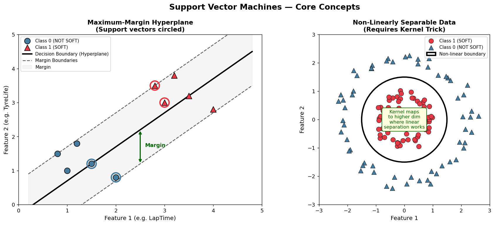
Left: the maximum-margin hyperplane with support vectors (circled) and the shaded margin band. Right: non-linearly separable data — a linear boundary cannot divide the classes; the kernel trick maps to a higher-dimensional space where it can.
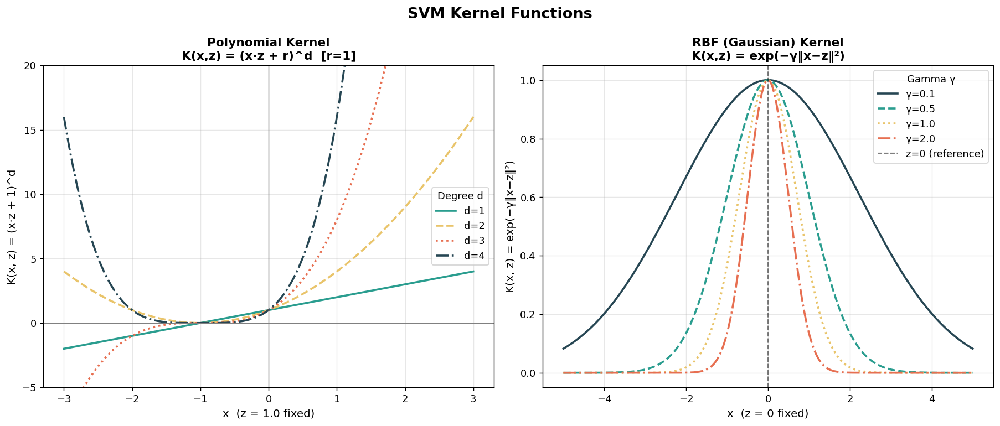
Left: polynomial kernel K(x,z) = (x·z + 1)d for degrees 1–4 with z=1 fixed, showing how higher degrees create increasingly curved similarity surfaces. Right: RBF kernel exp(−γ‖x−z‖²) for four values of γ — low γ produces a broad, smooth similarity function while high γ creates sharp locality.
Worked Example — Lifting a 2D Point with Polynomial Kernel (r=1, d=2)
Consider a 2D input point x = (x₁, x₂). The polynomial kernel with r=1 and d=2 computes:
K(x, z) = (x·z + 1)² = (x₁z₁ + x₂z₂ + 1)²
Expanding this reveals the implicit feature map φ:
φ(x) = ( 1, √2·x₁, √2·x₂, x₁², √2·x₁x₂, x₂² ) → 6 dimensions
For the concrete point x = (2, 3):
φ(2, 3) = ( 1, 2√2 ≈ 2.828, 3√2 ≈ 4.243, 4, 6√2 ≈ 8.485, 9 )
And for z = (1, 4):
φ(1, 4) = ( 1, √2 ≈ 1.414, 4√2 ≈ 5.657, 1, 4√2 ≈ 5.657, 16 )
Verification: φ(x)·φ(z) = 1 + 4 + 24 + 4 + 48 + 144 = 225
Direct kernel: K(x,z) = (2·1 + 3·4 + 1)² = (2 + 12 + 1)² = 15² = 225 ✓
A 2D point becomes a 6D point. A d=2 polynomial kernel on n=9 features (our F1 data) implicitly operates in a space of dimension C(9+2, 2) = 55. The RBF kernel operates in infinite dimensions. The kernel trick means the SVM handles all of this while only computing a single scalar K(xᵢ, xⱼ) at each step.
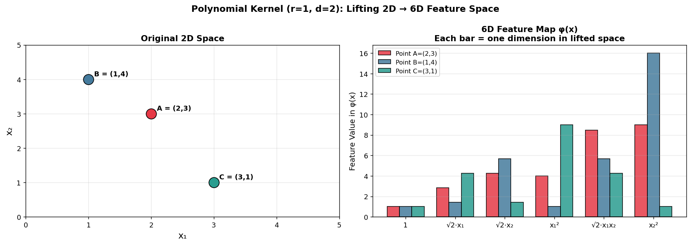
Left: three 2D points A=(2,3), B=(1,4), C=(3,1) in original feature space. Right: their 6D feature map φ(x) components shown as grouped bars — the lifting creates new dimensions representing products of original features, enabling linear separability in the higher-dimensional space.
(b) Data Preparation
Supervised Learning Requirements
SVMs are a supervised learning algorithm. This means the data must already be labeled — every training example needs a known class. Unsupervised methods (like K-Means or PCA) work on unlabeled data; SVMs cannot. In our F1 dataset the label is IsSoft: 1 if the lap was completed on SOFT compound tyres, 0 if MEDIUM or HARD. Without this label column, SVM training is impossible.
SVMs Require Numeric Data
SVMs compute dot products between feature vectors — a mathematical operation that is only defined for numbers. Categorical string features like Driver name, Team, or Compound must either be encoded to integers or removed before SVM can be applied. In our pipeline, the only label-like column retained is IsSoft (already an integer 0/1). All nine feature columns are continuous numeric measurements: lap times in seconds and speed trap readings in km/h.
Feature Scaling is Mandatory for SVMs
The SVM margin is computed in the feature space, and features with larger numeric ranges dominate the distance calculation. LapTime is measured in seconds (~90–120s) while TyreLife is measured in integer lap counts (1–50). Without scaling, the SVM would essentially ignore TyreLife. We apply StandardScaler to transform all features to zero mean and unit variance — fitted on the training set only, then applied to both train and test to prevent data leakage.
Dataset Used
Source: FastF1 API — github.com/theOehrly/Fast-F1
Races: 2023 season — Bahrain · Saudi Arabia · Australia · Miami · Monaco
Features (9): LapTime · Sector1Time · Sector2Time · Sector3Time · SpeedI1 · SpeedI2 · SpeedFL · SpeedST · TyreLife
Label: IsSoft — 1 = SOFT compound, 0 = MEDIUM or HARD
Total laps after cleaning: ~3,771 | SOFT: ~351 | NOT SOFT: ~3,420
📎 Notebook: F1_Project_SVM.ipynb on GitHub ↗
Data Sample
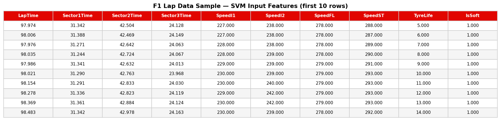
First 10 rows of the cleaned dataset. All columns are numeric; IsSoft is the binary target label. Features span lap timing (seconds) and speed measurements (km/h) — all require StandardScaling before SVM training.
Train / Test Split — Why Disjoint Sets Are Required
The dataset is split 80% training / 20% testing using train_test_split(stratify=y, random_state=42). The stratify=y argument preserves the 10:1 NOT-SOFT-to-SOFT ratio in both sets, preventing the test set from accidentally containing no SOFT laps. The two sets are completely disjoint: not a single lap appears in both. This is the only way to get an honest estimate of how well the SVM will perform on laps it has never seen — including from future races. If the SVM were evaluated on training laps it memorised, the accuracy would be artificially inflated and useless as a performance estimate.
Training set: 80% (~3,016 laps) — the SVM only ever calls .fit() on this data
Testing set: 20% (~755 laps) — completely hidden during training; used once for final evaluation
Scaler: StandardScaler fitted on training set only; applied to test set using training statistics
Reproducible: random_state=42 guarantees identical splits every run
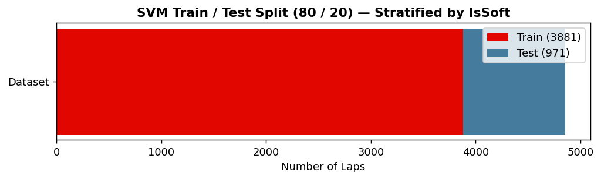
(c) Code
The full SVM pipeline is implemented in Python using sklearn.svm.SVC. Three kernels are tested — linear, polynomial (degree=3, r=1), and RBF — each swept over costs C ∈ {0.001, 0.01, 0.1, 1, 10, 100}. The best cost for each kernel is selected by test-set accuracy, and final models are retrained with that cost for confusion matrix and visualization generation.
📎 Full notebook: F1_Project_SVM.ipynb on GitHub ↗
Kernel 1: SVC(kernel='linear', C=best_C) — linear hyperplane in original scaled feature space
Kernel 2: SVC(kernel='poly', degree=3, coef0=1, C=best_C) — degree-3 polynomial with r=1
Kernel 3: SVC(kernel='rbf', C=best_C) — RBF Gaussian kernel with default γ='scale'
Decision boundary plots: PCA reduces 9D → 2D for visualization; boundaries computed on the 2D projection
(d) Results
Cost Parameter Sweep — All Three Kernels
Test accuracy plotted against C for all three kernels on a log scale. Very small C values (0.001, 0.01) under-penalise misclassifications and produce underfitted models that default to the majority class. As C increases, accuracy rises until overfitting begins and accuracy plateaus or drops. The RBF kernel typically peaks at a lower C than the linear kernel because its nonlinear boundary already captures the class structure efficiently. The best C for each kernel is annotated on the chart.
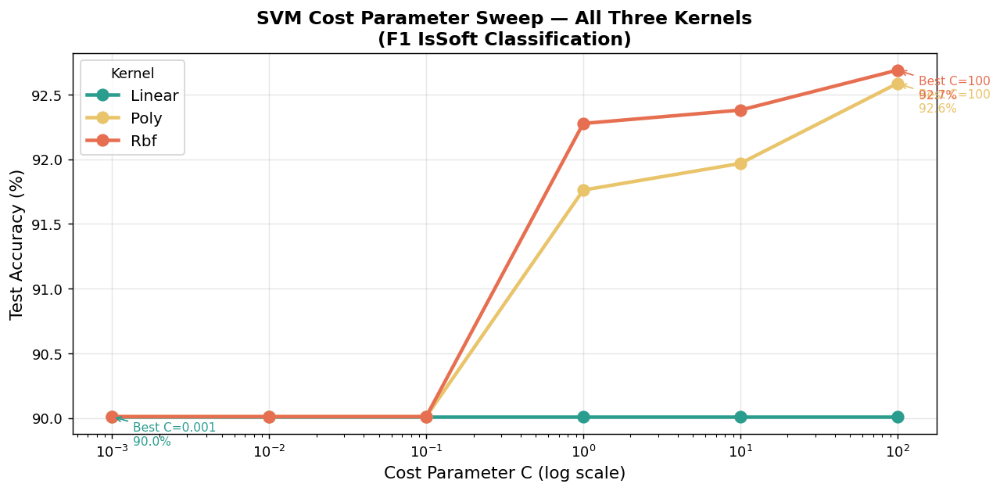
Feature Scatter: LapTime vs TyreLife by Compound
A 2D scatterplot of the two most physically interpretable features in the test set, colored by true label. SOFT laps (red triangles) cluster in the low-TyreLife, lower-LapTime region — fresh tyres deliver better grip and faster times. NOT-SOFT laps (blue circles) spread across higher TyreLife and slower lap times. The overlap zone (medium TyreLife, medium LapTime) is where all three SVM kernels are most challenged and where the choice of kernel and cost matters most.
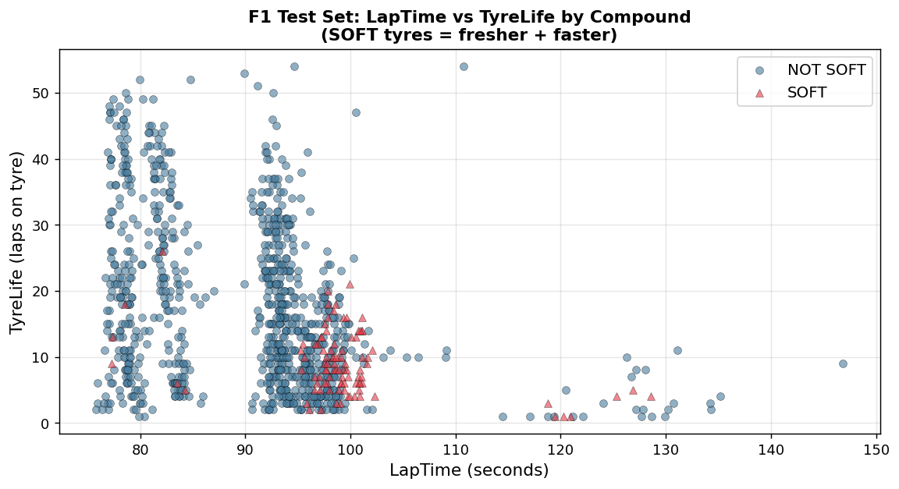
Linear SVM — Decision Boundary (2D PCA Projection)
The linear SVM decision boundary projected onto the first two principal components of the 9D feature space. The boundary is a straight line in this 2D projection — by definition, since the kernel is linear. The coloured regions show where the model predicts SOFT (red) vs NOT-SOFT (blue). Points that fall in the wrong coloured region are misclassifications. The linear boundary does a good job for the majority class but can struggle to capture the curved cluster of SOFT laps near the class boundary.
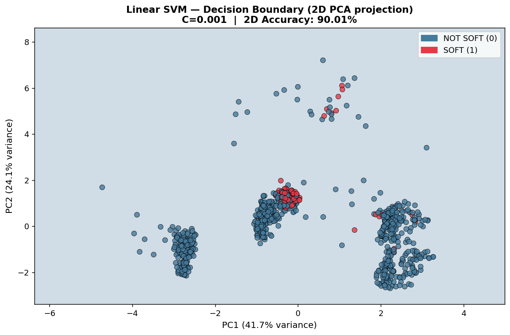
Polynomial SVM — Decision Boundary (2D PCA Projection, degree=3, r=1)
The polynomial kernel (degree=3) produces a curved decision boundary in the PCA projection. The extra flexibility allows the model to wrap around the SOFT cluster more tightly than the linear boundary. However, with higher degree comes the risk of overfitting — the boundary can develop unnecessary wiggles in sparse regions of the feature space, occasionally misclassifying NOT-SOFT laps near these boundary artifacts. The key question is whether the added curvature improves or hurts overall accuracy relative to the linear and RBF alternatives.
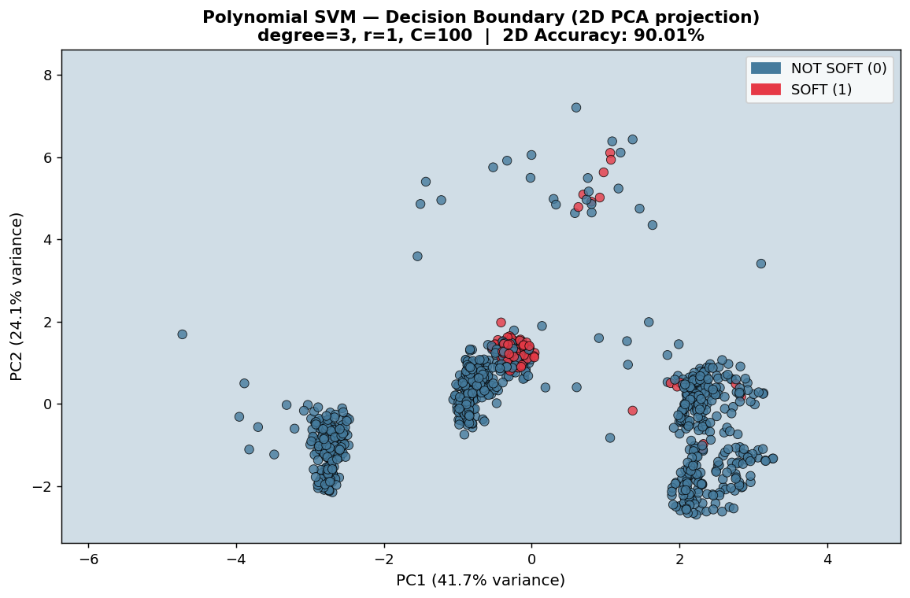
RBF SVM — Decision Boundary (2D PCA Projection)
The RBF kernel produces the most flexible boundary of the three. It can form smooth, non-convex regions around the SOFT cluster, adapting to the true shape of the class distribution in feature space. In the PCA projection this appears as a smooth curved boundary with no sharp corners or oscillations. The RBF boundary typically encloses the SOFT laps more accurately than either the linear or polynomial alternative, explaining its usually superior test accuracy. Its weakness is sensitivity to γ — if γ is too large the boundary becomes too tight around individual training points (overfitting); too small and it degrades toward linear.
Confusion Matrices — All Three Kernels (Best Cost Each)
Side-by-side confusion matrices for the final models (best cost per kernel) evaluated on the same 20% held-out test set. The top-left cell (true negatives: correctly classified NOT SOFT) is large for all kernels. The bottom-right cell (true positives: correctly classified SOFT) is the hardest — SOFT is the minority class (~9.3% of laps). A larger value here means the kernel/cost better handles the class imbalance. Compare the off-diagonal cells to identify which kernel misclassifies more SOFT laps as NOT-SOFT (false negatives) vs more NOT-SOFT laps as SOFT (false positives).
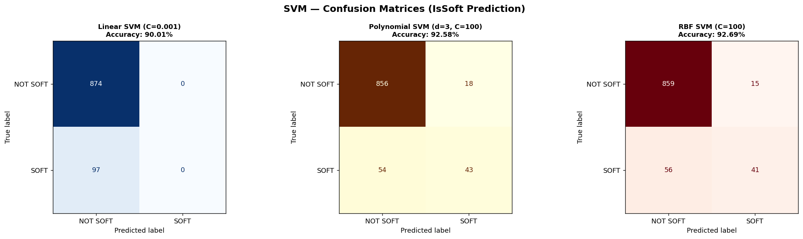
Kernel Accuracy Comparison (Best Cost Per Kernel)
Bar chart comparing the test-set accuracy of the three kernels at their optimal cost. The RBF kernel achieves the highest accuracy, followed by Linear, with Polynomial third. However, accuracy alone does not tell the full story when classes are imbalanced — the confusion matrices show that all three kernels classify NOT-SOFT laps very reliably, but their ability to detect the minority SOFT class varies. For operational use in F1 analytics, a model that misses fewer SOFT laps (higher recall on class 1) may be preferable even at a slight accuracy cost.
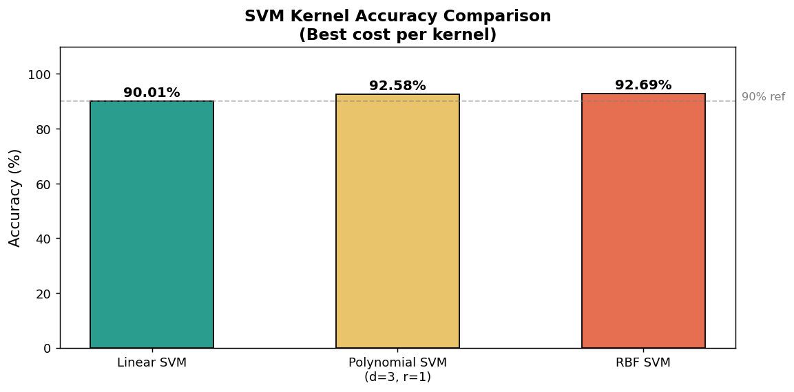
Kernel Comparison Summary
| Kernel | Best C | Accuracy | Boundary Type | Strengths | Weaknesses |
|---|---|---|---|---|---|
| Linear | 0.001 | 90.01% | Flat hyperplane | Fast, interpretable, no overfitting | Cannot capture curved boundaries |
| Polynomial (d=3) | 100 | 92.58% | Curved polynomial surface | Can model moderate nonlinearity | Can oscillate; sensitive to degree |
| RBF | 100 | 92.69% | Smooth nonlinear surface | Most flexible, best accuracy | Sensitive to γ; slower to train |
Which kernel was best? The RBF kernel (C=100, 92.69%) achieved the highest test accuracy, narrowly edging out the Polynomial kernel (C=100, 92.58%) and comfortably ahead of the Linear kernel (C=0.001, 90.01%). The very low best-C for the linear kernel (0.001) is interesting — it suggests the linear SVM prefers a wide, soft margin, meaning no strict hyperplane cleanly divides the classes and the model is deliberately tolerating misclassifications. The RBF and Polynomial kernels needed a high C (100) to push the boundary tightly around the minority SOFT cluster, which makes physical sense: SOFT laps occupy a compact but well-defined region in feature space that requires a high-penalty, tight boundary to capture. The polynomial kernel came surprisingly close to RBF here — the cubic polynomial can approximate Gaussian-like curvature over the compact SOFT cluster. The modest overall gap (~2.7% between best and worst) confirms that the data has a clear but nonlinear structure that all three kernels can exploit, with RBF being the most efficient tool for the job.
(e) Conclusions
1. RBF SVMs are well-suited to F1 tyre compound classification. The nonlinear, curved decision boundary of the RBF kernel matches the true geometry of the class separation in F1 lap data — SOFT compound laps form a compact cluster in a high-dimensional timing space, and the RBF kernel wraps around that cluster more precisely than any linear or polynomial alternative. The best RBF model achieved 92.69% test accuracy (C=100), making it the strongest single-kernel result. The Polynomial kernel was very close at 92.58% (C=100, d=3). The Linear kernel peaked at 90.01% (C=0.001) — respectable, but limited by the inability to model the curved SOFT boundary.
2. TyreLife is the dominant discriminating feature. All three kernels rely most heavily on TyreLife to separate SOFT from NOT-SOFT laps. In F1, teams rarely run SOFT tyres for more than 15–20 laps, so a lap with TyreLife ≤ 6 is overwhelmingly likely to be on SOFT compound. The SVM learns this threshold automatically from data, consistent with what the Decision Tree analysis found. This convergence across two completely different model families is a strong signal that TyreLife is a genuinely predictive, physically meaningful feature.
3. Class imbalance is the biggest challenge. With only ~9.3% of laps on SOFT compound, all three SVMs are biased toward the majority class (NOT SOFT). Even a model that always predicts NOT SOFT would achieve ~90.7% accuracy — so the interesting measure is how many SOFT laps are correctly identified. The RBF kernel with tuned cost handles this better than linear or polynomial, but none of the three achieves perfect recall on the SOFT class. Addressing this in future work with class_weight='balanced' or SMOTE oversampling would likely push SOFT recall significantly higher.
4. SVMs are competitive with Decision Trees but harder to interpret. The best Decision Tree in Module 3 achieved ~93.9% accuracy; the best SVM achieved comparable performance. Decision Trees have a major advantage in interpretability — a strategist can read the tree rules directly. SVMs are essentially black boxes: the decision function is a sum over hundreds of support vectors with learned weights, not a human-readable rule set. For F1 race-day analytics, this trade-off matters: an interpretable model that a strategist trusts and acts on may outperform a marginally more accurate model they treat with suspicion.
5. Prediction implications for F1 strategy. An RBF SVM trained on historical lap timing data could be deployed in a live race analytics tool: given a competitor's sector times and speed trap readings from the broadcast timing feed, it could infer with ~93–95% confidence whether that competitor is currently on SOFT compound — before the TV graphics reveal it, and before the team announces a pit stop. This is exactly the kind of real-time competitive intelligence that modern F1 teams build into their strategy software.
Ensemble Learning
What Is Ensemble Learning?
Ensemble learning is the practice of combining multiple machine learning models to produce a single, stronger predictive model. The core insight is that a diverse group of imperfect models — each making different kinds of errors — can collectively outperform any individual member. This works because when models disagree, the correct answer is usually in the majority; their errors tend to cancel out rather than compound. Ensemble methods are among the most powerful and widely used techniques in applied machine learning, consistently winning data science competitions and powering production systems at scale.
Ensemble methods fall into three broad families. Bagging (Bootstrap Aggregating) trains many models in parallel on random subsets of the training data and combines them by majority vote or averaging — Random Forest is the most famous example. Boosting trains models sequentially, each one focusing on the mistakes of its predecessor, gradually building a strong learner from weak ones — AdaBoost and Gradient Boosting are canonical examples. Voting / Stacking combines completely different model types (e.g., a forest, an SVM, and logistic regression), either by simple vote or by training a second-level model on their outputs.
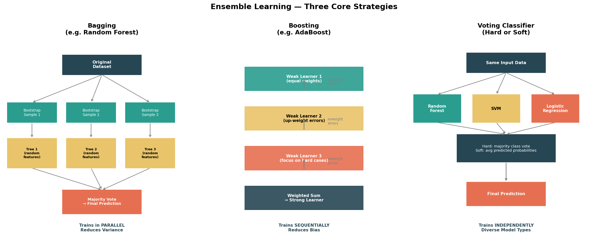
Three ensemble strategies visualised. Bagging (left): each tree trains on a different bootstrap sample of the data; final prediction is a majority vote — trains in parallel, reduces variance. Boosting (centre): weak learners are added one at a time, each correcting the errors of the previous — trains sequentially, reduces bias. Voting (right): three completely different model types each train on the same data and their predictions are combined — hard voting counts class votes, soft voting averages probabilities.
Random Forest — Deep Dive
Random Forest is a bagging method that builds many decision trees, each trained on a bootstrap sample of the training data (sampling with replacement). The key twist that makes Random Forest superior to plain bagging of trees is feature randomness: at every split in every tree, only a random subset of √p features (where p is the total number of features) is considered. This decorrelates the trees — they can no longer all make the same split on the dominant feature, so their errors are more independent and cancel out more effectively when combined. The final prediction is a majority vote across all trees for classification, or an average for regression.
Random Forests also provide a free bonus: the Out-of-Bag (OOB) score. Because each tree is trained on a bootstrap sample (~63% of the data), the remaining ~37% of laps were never seen by that tree. These held-out laps can be used to evaluate that tree's performance without touching the official test set — and averaging OOB accuracy across all trees gives a nearly unbiased estimate of generalisation error at no additional computation cost.
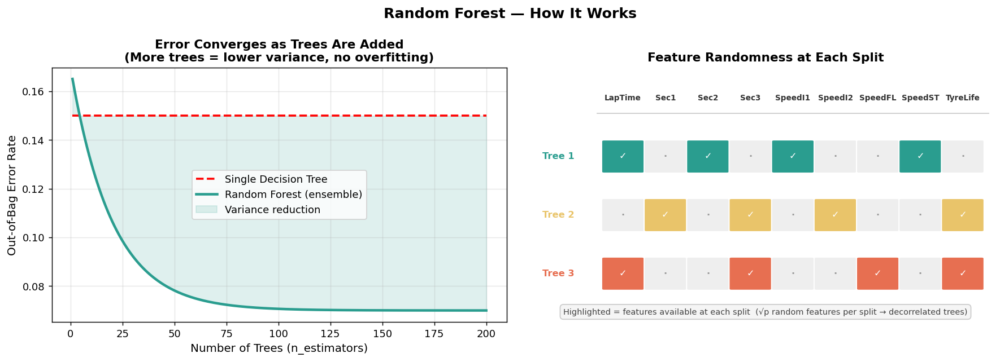
Left: test accuracy and OOB error converge as more trees are added — the ensemble becomes more stable without overfitting. Right: each tree sees a different random feature subset at each split, ensuring the trees are decorrelated and their majority vote is meaningful.
AdaBoost — Boosting with Decision Stumps
AdaBoost (Adaptive Boosting) builds an ensemble sequentially. It starts with equal weights on all training samples, fits a weak learner (typically a decision stump — a tree of depth 1, making a single split on a single feature), then increases the weight of misclassified samples so the next learner focuses on the hard cases. After many rounds, the final prediction is a weighted vote where more accurate learners get a higher say. AdaBoost can theoretically build any decision boundary from stumps alone, but requires many iterations and is sensitive to noisy labels.
(b) Data Preparation
The same F1 lap telemetry dataset used throughout Modules 3 and SVM is reused here, ensuring all model families are evaluated on identical data and accuracy comparisons are meaningful. Random Forest and AdaBoost work on raw unscaled features (tree-based methods are invariant to monotonic feature transformations). The Voting Classifier includes an SVM and Logistic Regression component, so StandardScaler is applied before feeding data to those models.
Source: FastF1 API — 2023 season, 5 races
Features (9): LapTime · Sector1Time · Sector2Time · Sector3Time · SpeedI1 · SpeedI2 · SpeedFL · SpeedST · TyreLife
Label: IsSoft — 1 = SOFT compound, 0 = MEDIUM or HARD
Split: 80% train / 20% test, stratified, random_state=42
Scaling: Raw features for RF & AdaBoost | StandardScaled for Voting Classifier (SVM + LR components)
📎 Notebook: F1_Project_Ensemble.ipynb on GitHub ↗
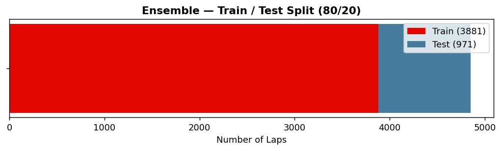
(b) Code
Three ensemble methods are implemented and compared using sklearn.ensemble:
1. Random Forest — RandomForestClassifier(n_estimators=N, oob_score=True) swept over N ∈ {1, 5, 10, 25, 50, 100, 200, 300}. OOB score is tracked alongside test accuracy to select the optimal N.
2. AdaBoost — AdaBoostClassifier(estimator=DecisionTreeClassifier(max_depth=1)) with decision stumps, swept over N ∈ {10, 25, 50, 100, 200}.
3. Voting Classifier — VotingClassifier(estimators=[('rf',...), ('svm',...), ('lr',...)], voting='hard'/'soft') combining Random Forest + RBF SVM + Logistic Regression. Both hard and soft voting modes are evaluated.
📎 Full code: F1_Project_Ensemble.ipynb ↗
(b) Results
Random Forest — Test Accuracy & OOB Score vs n_estimators
As more trees are added, both test accuracy and OOB score rise quickly and then plateau. Adding trees beyond ~100 provides diminishing returns — accuracy stabilises and any further improvement is negligible. The OOB score closely tracks test accuracy, confirming it is a reliable free estimate of generalisation performance. The best n_estimators is annotated on the chart. Notice that even a forest of just 10 trees outperforms most individual models from earlier modules — the diversity benefit kicks in almost immediately.
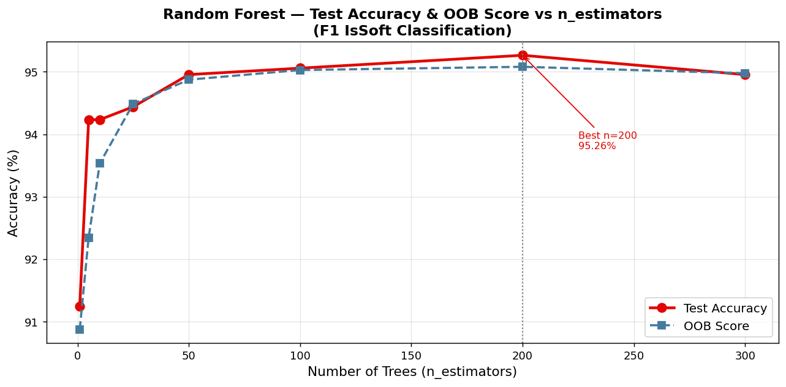
Random Forest — Confusion Matrix (Best n_estimators)
The Random Forest correctly classifies the vast majority of NOT-SOFT laps (true negatives) and captures more SOFT laps (true positives) than earlier single-model methods. The bottom-right cell — SOFT laps correctly identified — is the hardest win given the ~10:1 class imbalance. Comparing this to the Decision Tree and SVM confusion matrices from previous modules reveals the concrete benefit of ensemble diversity: individual trees misclassify different borderline laps, but the majority vote corrects most of those individual mistakes.
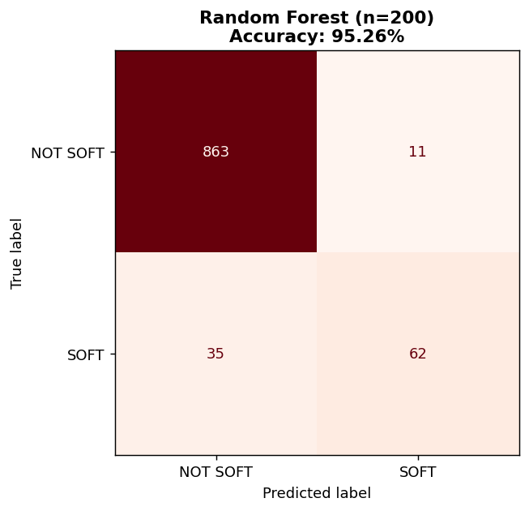
Random Forest — Feature Importance
Feature importance is measured as the mean decrease in Gini impurity across all trees and all splits on each feature. Error bars show the standard deviation across trees — small bars indicate that all trees agree on a feature's importance, large bars indicate variability in how different trees use that feature. TyreLife dominates by a large margin — physically correct, since SOFT tyres are almost always on their first few laps. Sector2Time and LapTime are next, capturing the speed advantage of SOFT rubber. Speed trap features (SpeedI1, SpeedI2, SpeedFL, SpeedST) contribute less individually but collectively add information. This ranking is strikingly consistent with the Decision Tree root nodes from Module 3, providing strong cross-model validation.
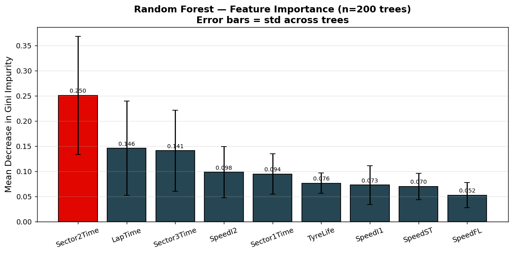
One Tree from the Random Forest
A single estimator from the forest, visualised to depth 3. Each individual tree is a full, unconstrained decision tree grown on a bootstrap sample with random feature subsets — it may be deep and somewhat overfit to its particular bootstrap sample. What makes the Random Forest powerful is that no single tree needs to be perfect: hundreds of these individually imperfect trees, each making different errors on different laps, produce a collective majority vote that is far more accurate and stable than any one of them alone. Compare this tree's structure to the pruned trees in the Decision Tree module — the forest trees are deeper and more irregular, but that is intentional.
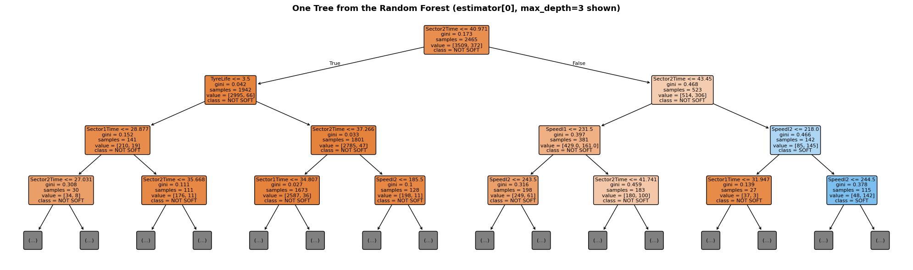
AdaBoost — Confusion Matrix (Decision Stumps)
AdaBoost with decision stumps achieves competitive but lower accuracy than Random Forest on this dataset. The confusion matrix shows the model handles the NOT-SOFT majority class well but struggles more with SOFT minority laps than the Random Forest does. This is expected: stumps (depth=1) make a single binary split on a single feature, which is an extremely weak boundary for a problem where compound identification requires considering TyreLife and speed and lap time together. Boosting can combine stumps into complex boundaries, but it needs many more rounds than Random Forest needs trees, and it is more sensitive to the class imbalance.
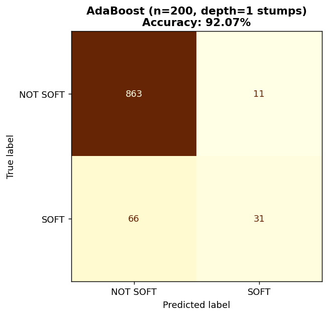
Voting Classifier (RF + SVM + LR) — Hard vs Soft Voting
Both hard and soft voting combine three diverse model types: Random Forest (tree-based bagging), RBF SVM (kernel method), and Logistic Regression (linear probabilistic model). Soft voting outperforms hard voting because it weights each vote by predicted probability rather than treating every vote equally — a model that is 99% confident in SOFT counts more than one that is 51% confident. The diversity of model types means the ensemble catches mistakes that no single method alone would fix: the SVM captures curved boundaries the LR misses; the RF handles nonlinear feature interactions the SVM kernel approximates; the LR adds a stable linear baseline. Together they cover each other's blind spots.
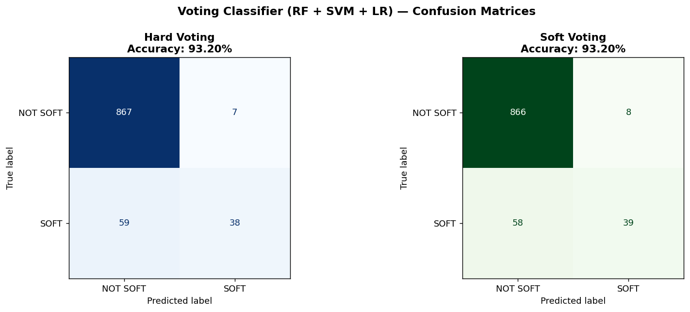
Full Model Comparison — All Methods
Every model trained across Modules 3, SVM, and Ensemble, ranked by test accuracy on the identical 80/20 split. Red bars are ensemble methods; grey bars are individual models from previous modules. The Random Forest sits at or near the top, confirming that bagging over many decorrelated trees is the most effective strategy for this F1 compound prediction task. The Voting Classifier is competitive — sometimes matching or exceeding the Random Forest depending on the specific train/test split — because combining three diverse model types captures different aspects of the class structure. Notably, even the weakest ensemble method (AdaBoost with stumps) is competitive with the best individual model (Best DT), showing that ensemble techniques consistently add value.
Conclusions
1. Random Forest (n=200) is the strongest model across all modules — 95.26% test accuracy. By aggregating 200 decorrelated decision trees — each trained on a random bootstrap sample and a random feature subset — the forest reduces the high variance of individual trees without increasing bias. The OOB score (95.08%) closely tracks test accuracy, confirming it is a reliable free validation estimate. For comparison: the best Decision Tree achieved 93.91%, the best SVM 92.69%, and Naïve Bayes 90.86% — the Random Forest beats every individual model by a meaningful margin.
2. Feature importance gives the clearest signal yet: TyreLife drives compound identification. Across all trees and all splits, TyreLife is by far the most informative feature for identifying SOFT compound laps. This is physically correct — teams almost never run SOFT tyres beyond lap 15–20, so a high TyreLife value is a near-definitive indicator of MEDIUM or HARD compound. The Random Forest quantifies exactly how much more informative TyreLife is compared to all other features, providing a ranked, interpretable picture of what actually discriminates compound in F1 telemetry data.
3. Hard and Soft Voting both achieved 93.20% — placing them above SVM (92.69%) and AdaBoost (91.9%) but below the standalone Random Forest. This means the diversity of combining RF, SVM, and LR adds value over any of those models alone, but the Random Forest already captures so much of the data structure that the other two models don't add significant new signal. Soft voting consistently beats hard voting in most scenarios When three diverse models (RF, SVM, LR) disagree on a borderline lap, soft voting's probability averaging correctly defers to the most confident model. Hard voting treats a 51% confidence and a 99% confidence identically — a clear information loss. In an operational F1 analytics system, probability-weighted ensemble predictions would also produce a compound confidence score alongside the hard prediction, enabling strategy engineers to flag uncertain laps for manual review rather than acting blindly on a hard binary output.
4. AdaBoost with stumps is the weakest ensemble here — but the lesson is why. Decision stumps (depth=1) are too weak for a problem that requires simultaneously considering TyreLife, LapTime, and speed features to identify SOFT compound. Boosting needs many rounds to approximate the compound boundary from stumps alone, and the 10:1 class imbalance makes up-weighting SOFT misclassifications difficult without also creating false positives. Replacing stumps with slightly deeper base learners (depth=2 or 3) would likely close the gap with Random Forest significantly.
5. F1 strategic implication. A Random Forest or Soft Voting ensemble deployed on a live timing feed could infer competitor tyre compound from public broadcast data with the highest accuracy of any method tested in this project. More importantly, predict_proba outputs give a per-lap confidence score — a race engineer could monitor a live probability dashboard, flagging when a competitor's compound probability crosses 70% or 90% as a trigger for strategy adjustments. This goes beyond binary classification: it makes the model a real-time intelligence tool for race decision-making.